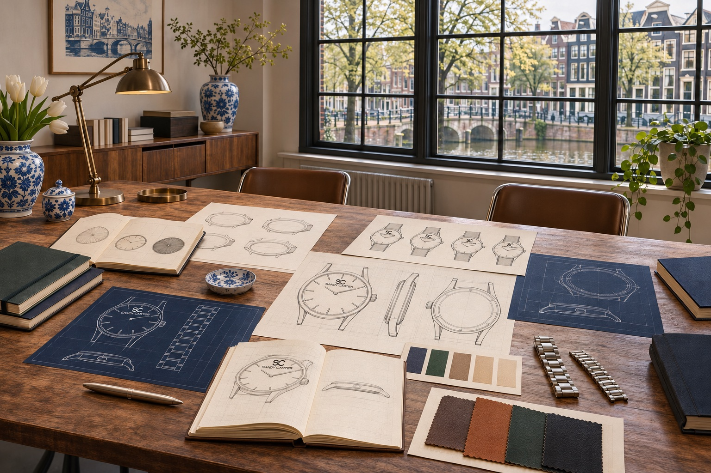
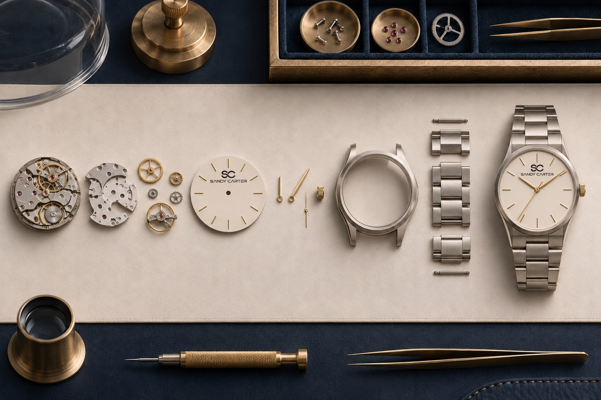
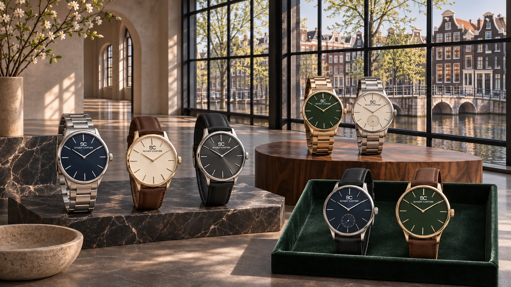

Dial architecture
Legibility begins with spacing, scale and a disciplined hierarchy.
TIME. REFINED.
Born from an idea in Amsterdam. Shaped by three creative perspectives. Envisioned for the world.
European-inspired watches guided by simplicity, proportion and individual character. The renewed collection is planned to launch in India in December 2026.
Our story
The founding perspectives
Rajan brought the international watch-industry vision. Sandy brought expressive visual identity. Carter brought watch-design discipline. Their founder-supplied story begins with conversations at Droog Amsterdam; no official Droog affiliation is claimed.
Meet our people
An idea born in Amsterdam
Between 2009 and 2013, an idea took shape in the Netherlands. Rajan Mehta’s watch-industry experience met Sandy’s expressive visual thinking and Carter’s product-design perspective.
According to the founder’s account, their conversations at Droog Amsterdam developed into the original SANDY D. CARTER concept before the trademark application was filed in India on 17 December 2014.
Discover our story

The vision behind the brand
Founded by Rajan Mehta, SANDY D. CARTER brings together international watch-industry experience, an Amsterdam-born creative vision and a contemporary approach to European-inspired design.
Meet the founderDesigned to be remembered
From the considered details of our watches to the experience of opening each box, every element reflects the SANDY D. CARTER philosophy.
The actual midnight-navy presentation box brings the SC monogram, Amsterdam-inspired identity and restrained European design language into one physical expression.
Discover the brand identity
Our design inspiration
The rhythm of Amsterdam’s façades. The contrast of old and new. Everyday surroundings, seen with a designer’s eye.

The art of watch design
Explore how marker spacing, case shape and material choices change the character of a watch.

Legibility begins with spacing, scale and a disciplined hierarchy.
Profile, crown and lugs are considered as one balanced form.

Metal, leather and restrained tones give the object its character.
From concept to creation
An outline becomes a dial. A dial finds its case. Materials and finishing bring the complete watch into focus.

The collection
Explore three directions within the debut collection.

The India debut
Discover the collection as the first models arrive.
Design philosophy
Clean forms and uncluttered design.
Proportion and harmony in every detail.
Distinctive design with understated confidence.
Thoughtful elements that complete the experience.
Watches for individual style
Designed around clarity and character rather than rigid categories.
Journal · Design stories
Private preview · December 2026
Discover SANDY D. CARTER before the official collection launch. Receive collection previews, product introductions and launch announcements.